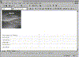
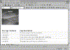

| ||||
You enter text in a table by typing directly in the cells. For this exercise, you will use the table you just inserted to create a simple file description list of the pages that are part of your Personal Web.
Web Page File Names
default.htm interest.htm photo.htm favorite.htm tutorial.htm

Click image to enlargeFigure 1. Text added to the table
Page Descriptions
The home page of the Personal Web
A list of my personal interests
Some of the cool pictures that came with FrontPage
A list of my favorite World Wide Web sites
The page I am practicing my tutorial lesson on
Figure 2. The Bold button
The column headers are formatted with bold type. This makes it easier to distinguish the column labels from the other cells.
The pointer changes to a double-headed horizontal arrow.
Dynamic table resizing is easy to do with FrontPage and works with rows as well as with columns.
Your table should now look like this:

Click image to enlargeFigure 3. Resizing the table
Figure 4. The Save button
The page is saved to the current FrontPage-based Web site.
Did you find this material useful? Gripes? Compliments? Suggestions for other articles? Write us!
© 1999 Microsoft Corporation. All rights reserved. Terms of use.